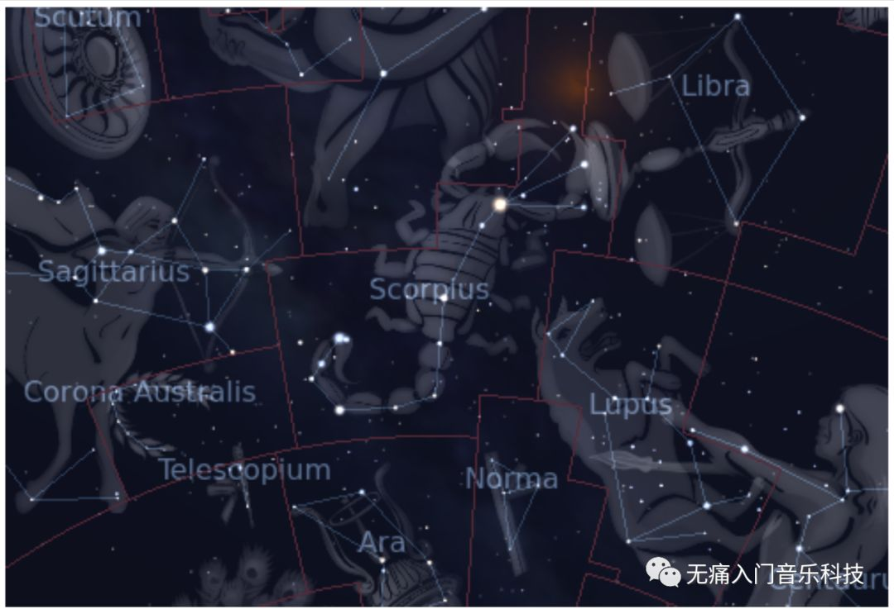
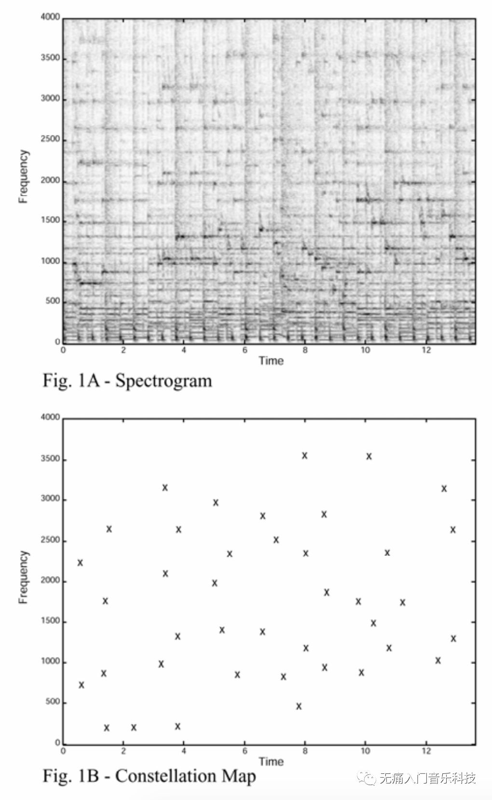
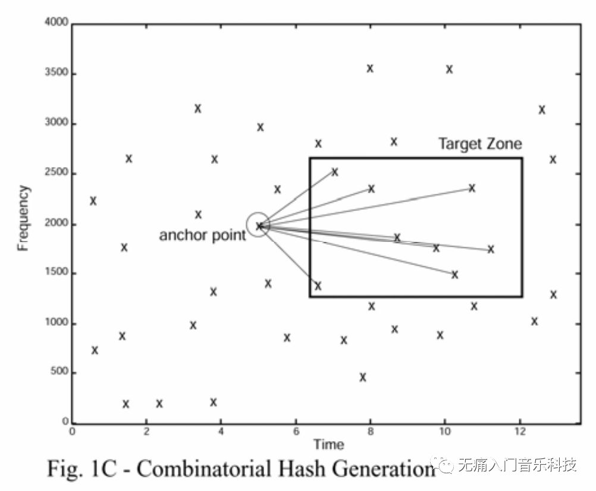
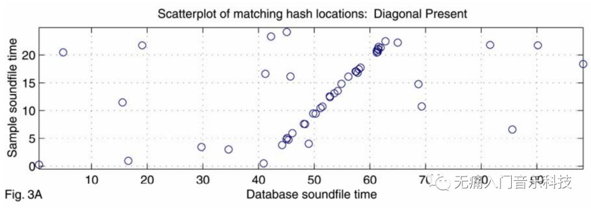
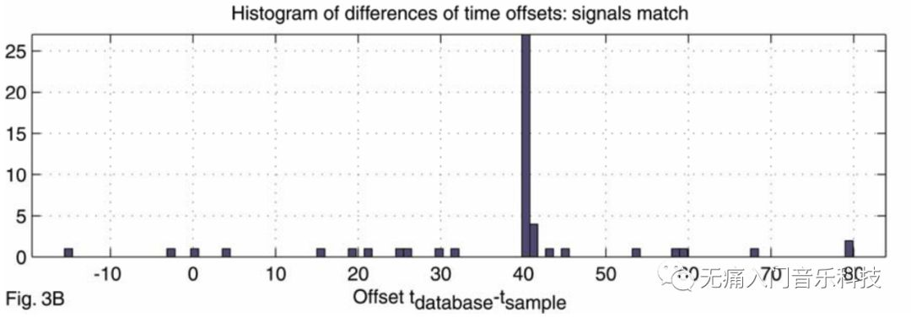
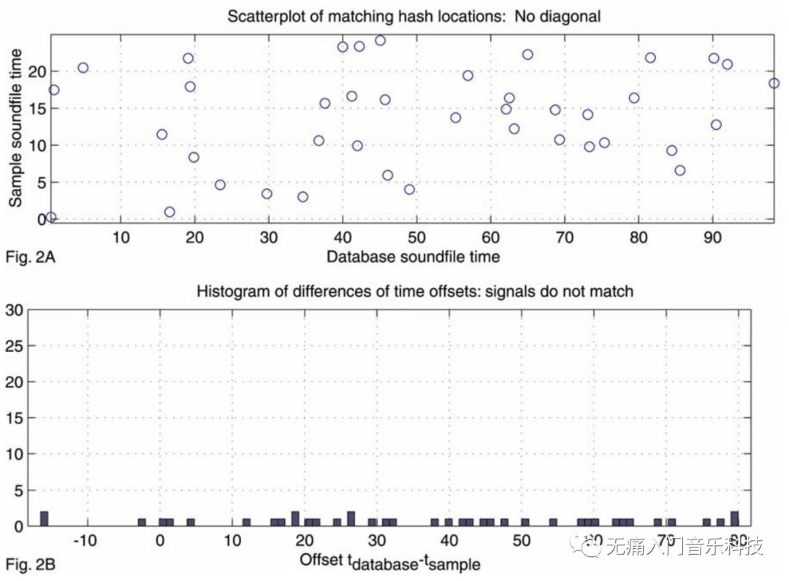

「MIR-03」听歌识曲: 音乐宇宙里的占星师
听歌识曲可以让"求BGM名"不再是个问题, 这背后的算法, 就如同一个看遍音乐宇宙星图的占星大师傅, 自动为你求解!
♬ 本文为MIR音乐信息检索系列的第7篇文章 ♬
先用我刚刚录的30秒视频, 演示下QQ音乐App里的听音识曲功能:
可见3秒就能把音频识别出来, 不仅返回歌曲基础信息,
更是直接定位到当前播放的时间戳. 我的好友&同事鲁霄大兄弟,
已经通过QQ音乐的知乎账号发表了4篇技术系列文章, 并在MIREX 2019
Audio Fingerprinting竞赛中取得了第一名! 所以我这篇更偏科普,
争取让大家无痛入门~
之所以说整个过程像占星, 是因为给定音频片段的指纹与整个曲库的指纹在匹配过程中,
好比在星图中认出一个星座, 而音频指纹与星图在地球上空的样子,
更是有异曲同工之妙.

接下来, 我将回答以下三个问题, 带大家一步步地了解听歌识曲的原理：
-
什么是音频指纹?
-
如何从音频指纹中获得Hashes?
-
如何用Hashes进行歌曲匹配？
『音频指纹』
音频指纹就如人的指纹一样, 可以有效地代表一首歌. 因为听歌识曲做匹配时, 是和曲库千万级歌曲做比对, 那么音频指纹就要足够精简, 才能3秒内就算出匹配结果; 同时, 音频指纹还要有足够的辨识度, 比如在"求问背景音乐是什么"这个场景下, 不可避免地有其他音频信号掺杂其中(比如男女主在说话), 那背景音乐的音频指纹如何在干扰环境下依然脱颖而出?
那让我们仰望上图的星空, 看到由中间几颗星星辨识出的天蝎座,
其实星座本身不止有这些星星,
只是它们总是最亮的那几颗, 亮到抗得住地球天空状态的干扰. 同理,
如果能挑出音频里最亮的星星, 构成其指纹, 不就妥妥的了?
业界第一个开发音频指纹的公司Shazam, 也是这么想的: 挑出"音频波形进行STFT变换后得到的spectrogram"里高能量的峰点们, 构成constellation map星云图, 也就是这个音频的指纹模样了!

☞ 不记得spectrogram是什么了? 回看「MIR-01」要把音乐画出来，总共分几步？
至此算是给出了解决"辨识度"的方案, 那如何用更精简有效的数据格式表示星云图? 答案是Hashes.
『Hashes』
最最简单的表示方式, 莫过于直接用 [(4s, 800Hz), (7s, 1000Hz), (10s, 1700Hz)] 这样的方式表示图1B中的点, 然而问题是, 4s/7s/10s只是当前这个音频片段a里的时间信息, 但这个音频片段很可能出自于某首歌A里的第44s/47s/50s, 拿着这种形式的时间信息去做匹配并没有什么用...
更何况, 听歌识曲实现的是, 听一丢丢片段, 就能知道是哪首歌. 利用[(4s, 800Hz), (7s, 1000Hz), (10s, 1700Hz)] 这样的数据, 算法就只能从头到尾听完整首歌, 才能识别出来了.
因此, 相比于用绝对的时间和频率的值, 不如用相对的数据: 将一个点(t1, f1), 与其之后的一个点(t2, f2), 这一对表示为由3个数值构成的一个hash = f1: f2: t2-t1 这样把音频里所有一对对存储成hashes, 在音乐意义上就是存储了当前音频中, 能被明显听到的音符们, 在发生音程变化时所用的时间.

『匹配流程』
当我们拥有曲库所有歌曲各自的hashes, 你想让App识别的歌曲片段a的hashes也被计算出来之后, 匹配过程无非是: 当hashes(a)与曲库中一首歌A的hashes(A)呈现出最大数量的匹配hash, 那么这个歌曲片段a很有可能来自于歌曲A.
但是问题又来了! "最大数量的匹配hash"没有考虑hash的先后次序, 仅仅通过这个条件判定识别结果会有什么后果? 比如歌曲片段a听上去应该是小星星的旋律: C
C G G A A G 且音符之间均隔0.5秒;
这时曲库里有一首歌B, 在开头2秒出现了A A G, 中间副歌100秒时出现C
C G G, 最后结束的2秒出现了G A.
这种情况时, hashes(a)也都被包含在hashes(B)里呈现最大数量的匹配,
但明显不能说片段a来自于歌曲B呀!
解决办法是, 当hashes(a)有个hash匹配hashes(A)的一个hash时, 记录该hash分别在片段a和歌曲A中的时间戳, 以下图为例:

上图中, 歌曲片段a (sample soundfile) 共25秒, 曲库里的一首歌曲A
(database soundfile) 共100秒, 在其第40秒到60多秒之间,
有很多和hashes(a)的匹配, 这里每一个匹配都用一个蓝圆圈表示.
若将圆圈对应的database soundfile time减去sample soundfile time, 可得大部分时间差为40s, 具体时间差得出的直方图分布如下所示:

可以推断片段a应该就是歌曲A中第40秒到第65秒的片段, 听歌识曲结果返回歌曲A! 如果是片段a和反例中的曲库歌曲B做匹配, 那上面同样的两个图示就会呈现出:

因此在数据库里真正存储歌曲的hashes时, 还需要存上每条hash在该歌曲中的时间戳 (hash: time = [f1: f2: t2-t1]: t1)
通过以上的科普, 希望大家对听歌识曲的基本原理有了大概理解, 其实还有许许多多科普文章里说不清楚的技术细节...
广告时间: 欢迎大家体验QQ音乐App里听歌识曲的功能, 另有专门的"Q音探歌"App请多支持!
✎ 文中图例来自文献：Avery Li-Chun Wang. "An industrial strength audio search algorithm." In ISMIR, pp. 7-13. 2003.